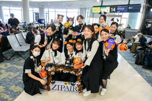
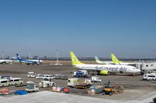
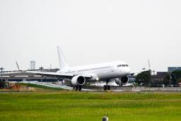
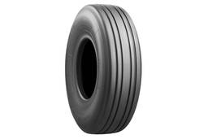
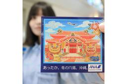
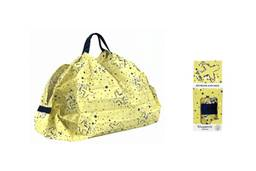
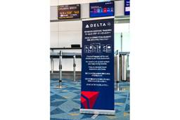
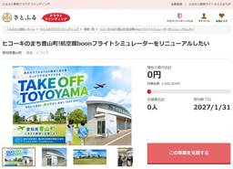

AIRLINE web -月刊エアライン×航空旅行-
https://airline.ikaros.jp
飛行機の運航を支える最前線、魅力あふれる空の旅のサービス、飛ぶためのテクノロジーやエアライン・空港の最新ビジネス動向、飛来機の撮影＆投稿など趣味として楽しむ航空の世界まで幅広く情報をお届けします。
フィード

ZIPAIR、成田空港で恒例のHalloweenイベント。カウンターも機内もハロウィン仕様に
AIRLINE web -月刊エアライン×航空旅行-
ZIPAIRが恒例のハロウィンイベントを開催。 ZIPAIRは10月31日、成田空港 第1ターミナルの同社出発便の搭乗口で、ハロウィンイベントを開催した。 ZIPAIRでは、客室乗務と地上旅客業務を兼務する「Z_ON […]The post ZIPAIR、成田空港で恒例のHalloweenイベント。カウンターも機内もハロウィン仕様に first appeared on AIRLINE web -月刊エアライン×航空旅行-.
9時間前
JAL、福岡空港でトーイングトラクターの「自動運転レベル4」運用を開始
AIRLINE web -月刊エアライン×航空旅行-
JALと福岡国際空港（FIAC）は、10月26日から福岡空港において、搬送用車両（トーイングトラクター）の自動運転レベル4（特定条件下での完全無人運転）による運用を開始した。JALにおけるレベル4導入は羽田・成田空港に […]The post JAL、福岡空港でトーイングトラクターの「自動運転レベル4」運用を開始 first appeared on AIRLINE web -月刊エアライン×航空旅行-.
19時間前
エア タヒチ ヌイ、成田＝タヒチ線の通年運航を再開
AIRLINE web -月刊エアライン×航空旅行-
エア タヒチ ヌイは、2027年より成田＝タヒチ（パペーテ）線の通年運航を再開する。これにより、年間を通じて日本とタヒチを結ぶ直行便を利用できるようになる。 通年運航の再開には、アジア各国からタヒチへの渡航需要に加え […]The post エア タヒチ ヌイ、成田＝タヒチ線の通年運航を再開 first appeared on AIRLINE web -月刊エアライン×航空旅行-.
1日前
JAL、11〜12月の機内販売で、JAL制服着用ファミリアベアーやマリメッコとの初コラボアイテム登場
AIRLINE web -月刊エアライン×航空旅行-
JALは、国内線および国際線の搭乗客限定で利用できる機内販売において、11月1日よりラインナップを一新し、新商品の販売を開始する。パイロットや客室乗務員、整備士の制服を着た「ファミリア」のぬいぐるみや、「マリメッコ」と […]The post JAL、11〜12月の機内販売で、JAL制服着用ファミリアベアーやマリメッコとの初コラボアイテム登場 first appeared on AIRLINE web -月刊エアライン×航空旅行-.
1日前
AIRDO、パジャマ姿のベア・ドゥなど機内販売新商品
AIRLINE web -月刊エアライン×航空旅行-
マスコットベア・ドゥ（パジャマVer.）〈ホワイト〉。 AIRDOは、11月1日より、AIRDOが運航する全路線の機内で「マスコットベア・ドゥ（パジャマVer.）」、「『さっぱち』スティックハニー」を販売する。 マスコ […]The post AIRDO、パジャマ姿のベア・ドゥなど機内販売新商品 first appeared on AIRLINE web -月刊エアライン×航空旅行-.
1日前
AIRDO、「ゴールデンカムイ」コラボレーションを延長
AIRLINE web -月刊エアライン×航空旅行-
©野田サトル／集英社・ゴールデンカムイ製作委員会 AIRDOは、2026年1月から展開しているTVアニメ「ゴールデンカムイ」とのコラボレーション企画を、当初予定していた12月までから、2027年3月末まで延長 […]The post AIRDO、「ゴールデンカムイ」コラボレーションを延長 first appeared on AIRLINE web -月刊エアライン×航空旅行-.
1日前

ANAHD、AIRDO／ソラシドエアの共同持ち株会社の完全子会社化へ向け協議。ブランドは当面維持
AIRLINE web -月刊エアライン×航空旅行-
ANAホールディングス（ANAHD）は10月29日、AIRDOとソラシドエアの共同持株会社である株式会社リージョナルプラスウイングス（RPW）との間で、株式交換によるRPWの完全子会社化に向けた具体的な協議および検討を […]The post ANAHD、AIRDO／ソラシドエアの共同持ち株会社の完全子会社化へ向け協議。ブランドは当面維持 first appeared on AIRLINE web -月刊エアライン×航空旅行-.
2日前

ジェットスター4機目のA321LRは“真っ白”塗装。新灯火ユニット「MFRL」を国内初採用
AIRLINE web -月刊エアライン×航空旅行-
ジェットスター・ジャパンにとって4機目となるエアバスA321LR（JA29LR）が真っ白な塗装で到着。 ジェットスター・ジャパンが新たに導入するエアバスA321LRの4号機（登録記号：JA29LR）が10月29日、成田 […]The post ジェットスター4機目のA321LRは“真っ白”塗装。新灯火ユニット「MFRL」を国内初採用 first appeared on AIRLINE web -月刊エアライン×航空旅行-.
2日前
スプリング・ジャパンとGPA、「滑走路の日」キャンペーンで成田空港バスツアーを実施
AIRLINE web -月刊エアライン×航空旅行-
「スプリング・ジャパン『滑走路の日』×成田空港スペシャルバスツアー」。 スプリング・ジャパンとグリーンポート・エージェンシーは共同で、「スプリング・ジャパン『滑走路の日』×成田空港スペシャルバスツアー」を10月26日よ […]The post スプリング・ジャパンとGPA、「滑走路の日」キャンペーンで成田空港バスツアーを実施 first appeared on AIRLINE web -月刊エアライン×航空旅行-.
3日前
ソラシドエア、オリジナル芋焼酎「そらより。2027」を発売へ
AIRLINE web -月刊エアライン×航空旅行-
パッケージデザインは2027年に公開予定。 ソラシドエアは、薩摩酒造、地域商社推進機構、鹿児島県枕崎市との4者連携プロジェクトの第2弾として、オリジナル芋焼酎「そらより。2027」を2027年春頃に発売する。第1弾の好 […]The post ソラシドエア、オリジナル芋焼酎「そらより。2027」を発売へ first appeared on AIRLINE web -月刊エアライン×航空旅行-.
3日前
東京モノレール、駅社員・乗務員の制服を16年ぶりにリニューアル
AIRLINE web -月刊エアライン×航空旅行-
東京モノレールの駅社員および乗務員の新制服。 羽田空港と都心をつなぐ「東京パノラマライン」を運行する東京モノレールは、16年ぶりとなる接客制服のリニューアルを行ない、11月1日より着用を開始する。リニューアルするのは、 […]The post 東京モノレール、駅社員・乗務員の制服を16年ぶりにリニューアル first appeared on AIRLINE web -月刊エアライン×航空旅行-.
3日前

ブリヂストン、ボーイング737-8／737NG向け次世代タイヤ供給、着陸可能回数20％以上向上
AIRLINE web -月刊エアライン×航空旅行-
ブリヂストン、ボーイング737-8／737NG向け次世代タイヤ供給。 ブリヂストンは10月27日、独自の材料技術とフライトデータを用いたシミュレーション技術を組み合わせた最適設計により、摩耗性能を大幅に向上させたボーイ […]The post ブリヂストン、ボーイング737-8／737NG向け次世代タイヤ供給、着陸可能回数20％以上向上 first appeared on AIRLINE web -月刊エアライン×航空旅行-.
3日前

ANA整備士に「ステッカーください」と声がけを。那覇空港で「首里城正殿復元記念ステッカー」プレゼント。11月1日から
AIRLINE web -月刊エアライン×航空旅行-
整備士に声をかけてプレゼントしてもらえる「首里城正殿復元記念オリジナルステッカー」。 ANAグループの航空機整備会社であるANAラインメンテナンステクニクスの沖縄整備部 社員が、首里城正殿の復元を記念して企画・制作した […]The post ANA整備士に「ステッカーください」と声がけを。那覇空港で「首里城正殿復元記念ステッカー」プレゼント。11月1日から first appeared on AIRLINE web -月刊エアライン×航空旅行-.
3日前
東京・大手町タワーで「JALふるさとマルシェ」開催。資源循環や地域活性化に向けた東京建物との協働
AIRLINE web -月刊エアライン×航空旅行-
JALと東京建物が、東京・大手町タワー地下2階の森のプラザで「JALふるさとマルシェ」を開催。 JALと東京建物は、持続可能な社会の実現に向けた協業の第1弾として、10月28日と29日の2日間、東京・大手町タワー地下2 […]The post 東京・大手町タワーで「JALふるさとマルシェ」開催。資源循環や地域活性化に向けた東京建物との協働 first appeared on AIRLINE web -月刊エアライン×航空旅行-.
3日前
全国の精鋭12名が4分30秒で18席を仕上げる。ANA、機内清掃スキルコンテスト2026を開催
AIRLINE web -月刊エアライン×航空旅行-
ANAは10月26日、機内清掃技術の全国1位を決定する社内コンテスト「ANA Cabin Cleaning Skill Contest 2026」を、羽田空港のそばにある総合訓練施設「ANA Blue Base」で開催 […]The post 全国の精鋭12名が4分30秒で18席を仕上げる。ANA、機内清掃スキルコンテスト2026を開催 first appeared on AIRLINE web -月刊エアライン×航空旅行-.
4日前
福岡空港に「TABISIA」誕生。商業・ホテル・バスターミナルを備える複合施設を新設。2027年夏頃グランドオープン
AIRLINE web -月刊エアライン×航空旅行-
福岡国際 国内線ターミナルビル直結の複合施設「TABISIA」が2027年オープンへ。 福岡国際空港株式会社（FIAC）は10月27日、国内線ターミナル直結の複合施設の概要や施設名称などを発表した。 福岡空港の将来イ […]The post 福岡空港に「TABISIA」誕生。商業・ホテル・バスターミナルを備える複合施設を新設。2027年夏頃グランドオープン first appeared on AIRLINE web -月刊エアライン×航空旅行-.
4日前
デルタ航空、すべての太平洋路線・全客室で無料Wi-Fiの提供を開始
AIRLINE web -月刊エアライン×航空旅行-
デルタ航空は、日米路線を含むすべての太平洋路線において、T-Mobile提供による無料Wi-Fiサービスの提供を開始した。無料のマイレージプログラム「スカイマイル」会員であれば搭乗クラスを問わず常時利用可能。 機内W […]The post デルタ航空、すべての太平洋路線・全客室で無料Wi-Fiの提供を開始 first appeared on AIRLINE web -月刊エアライン×航空旅行-.
5日前

スカイマーク、機内販売に新商品3点 地酒リレー第3弾も
AIRLINE web -月刊エアライン×航空旅行-
「スカイマークオリジナルShupatto コンパクトバッグ M」（2,800円） スカイマークは11月1日、機内販売のラインアップに「スカイマークオリジナル Shupatto コンパクトバッグ M」「スカイマークオリジ […]The post スカイマーク、機内販売に新商品3点 地酒リレー第3弾も first appeared on AIRLINE web -月刊エアライン×航空旅行-.
5日前

デルタ航空、羽田＝アトランタ線の乗り継ぎ時に荷物検査が不要に
AIRLINE web -月刊エアライン×航空旅行-
羽田＝アトランタ線を利用し、米国での乗り継ぎ時に預け入れ手荷物の再検査が不要に。 デルタ航空は、羽田空港発アトランタ国際空港行きの便に「シームレス・バゲージ・トランスファー」サービスを導入した。これにより、羽田空港から […]The post デルタ航空、羽田＝アトランタ線の乗り継ぎ時に荷物検査が不要に first appeared on AIRLINE web -月刊エアライン×航空旅行-.
5日前

愛知県豊山町の「航空館boon」、フライトシムリニューアルに向けたクラファン開始
AIRLINE web -月刊エアライン×航空旅行-
「ヒコーキのまち豊山町！航空館boonフライトシミュレーターをリニューアルしたい」。 「さとふるクラウドファンディング」は、「ヒコーキのまち豊山町！航空館boonフライトシミュレーターをリニューアルしたい」の寄付受け付 […]The post 愛知県豊山町の「航空館boon」、フライトシムリニューアルに向けたクラファン開始 first appeared on AIRLINE web -月刊エアライン×航空旅行-.
5日前
スプリング・ジャパン、新ロゴと新塗装を発表。JAL機材改修で追加4機導入へ
AIRLINE web -月刊エアライン×航空旅行-
スプリング・ジャパンがブランドリニューアルと増機計画を発表。 スプリング・ジャパンは10月26日、ブランドリニューアルと機材計画に関する記者会見を実施した。会見には同社代表取締役社長の浅見達朗氏と、デザインを担当した株 […]The post スプリング・ジャパン、新ロゴと新塗装を発表。JAL機材改修で追加4機導入へ first appeared on AIRLINE web -月刊エアライン×航空旅行-.
6日前
ANA FESTA、「琉球キャラメルサンド～黒糖きな粉～」を10月末まで先行販売。那覇空港限定
AIRLINE web -月刊エアライン×航空旅行-
「琉球キャラメルサンド～黒糖きな粉～」 那覇空港内「ANA FESTA 那覇ロビー1号店」にて、10月16日から10月31日までの期間中、沖縄県限定商品「琉球キャラメルサンド～黒糖きな粉～」を先行販売する。 沖縄県産 […]The post ANA FESTA、「琉球キャラメルサンド～黒糖きな粉～」を10月末まで先行販売。那覇空港限定 first appeared on AIRLINE web -月刊エアライン×航空旅行-.
6日前
Panasonic Avionics、大阪・門真工場の拡張を完了。機内エンタメ「Astrova」の受注拡大に対応
AIRLINE web -月刊エアライン×航空旅行-
Panasonic Avionicsの機内エンターテインメントシステムを一貫生産する北門真拠点の工場。 パナソニック コネクト内で航空機向けシステムを手がけるパナソニック アビオニクス（Panasonic Avioni […]The post Panasonic Avionics、大阪・門真工場の拡張を完了。機内エンタメ「Astrova」の受注拡大に対応 first appeared on AIRLINE web -月刊エアライン×航空旅行-.
7日前

10月29日の「ANAにキュン！」。国内外旅行の割引クーポン配布やANA Mallマイル5倍などを実施
AIRLINE web -月刊エアライン×航空旅行-
ANA Xは、2026年10月29日に「ANAにキュン！」を開催する。 「ANAにキュン！」は、毎月29日を「ANAの感謝の日」として、1日限定で実施されている。今回の販売期間は、2026年10月29日0時から23時 […]The post 10月29日の「ANAにキュン！」。国内外旅行の割引クーポン配布やANA Mallマイル5倍などを実施 first appeared on AIRLINE web -月刊エアライン×航空旅行-.
9日前
JALUX、ウズベキスタン・タシケントの新国際空港事業に出資
AIRLINE web -月刊エアライン×航空旅行-
タシケント新国際空港の完成予想イメージ。 JALグループの商社であるJALUXは、双日欧州会社がウズベキスタンの首都タシケントでの新空港の開発・運営事業のため設置した持ち株会社へ出資参画することを決定した。 また同社 […]The post JALUX、ウズベキスタン・タシケントの新国際空港事業に出資 first appeared on AIRLINE web -月刊エアライン×航空旅行-.
9日前
アビエーション・キャピタル・グループ、A320neoファミリーを75機発注
AIRLINE web -月刊エアライン×航空旅行-
ACGのA320neoファミリー。 エアバスおよび米国の航空機リース会社であるアビエーション・キャピタル・グループ（ACG）は、A320neoファミリーを75機発注する契約を締結した。これにより、ACGによるA320n […]The post アビエーション・キャピタル・グループ、A320neoファミリーを75機発注 first appeared on AIRLINE web -月刊エアライン×航空旅行-.
9日前
エア・インディア、関西＝デリー線を2027年2月開設、週4便で直行
AIRLINE web -月刊エアライン×航空旅行-
エア・インディア。 エア・インディアは2027年2月3日より、関西＝デリー線を週4便で開設する。エア・インディアによる関西空港発着のインド路線は2019年以来の再開となる。過去には経由便として運航していたが、今回は関西 […]The post エア・インディア、関西＝デリー線を2027年2月開設、週4便で直行 first appeared on AIRLINE web -月刊エアライン×航空旅行-.
10日前
スカイマーク、長崎県と空旅でコラボ、10月27日から
AIRLINE web -月刊エアライン×航空旅行-
「くるにゃ～・いくにゃ～、にゃーがの空旅キャンペーン」。 スカイマークは、福山雅治氏がクリエイティブプロデューサーを務める長崎県の魅力発信プロジェクト「長崎の変」のキャラクター「にゃーが」とコラボレーションし、「くるに […]The post スカイマーク、長崎県と空旅でコラボ、10月27日から first appeared on AIRLINE web -月刊エアライン×航空旅行-.
10日前
ユナイテッド航空、公式モバイルアプリの日本語版をリリース、日本円決済にも対応
AIRLINE web -月刊エアライン×航空旅行-
ユナイテッド航空は、公式モバイルアプリの日本語版をリリースした。大手米系航空会社として初となる取り組みで、日本円での運賃表示および決済に対応し、航空券の予約から運航状況のリアルタイム受信、到着時の案内までスムーズな旅程 […]The post ユナイテッド航空、公式モバイルアプリの日本語版をリリース、日本円決済にも対応 first appeared on AIRLINE web -月刊エアライン×航空旅行-.
10日前
ANA Pay、200万人突破記念で抽選で4,000人に還元
AIRLINE web -月刊エアライン×航空旅行-
「ANA Pay」の累計会員数が200万人を突破。 ANA Xは、スマートフォン決済サービス「ANA Pay」の累計会員数が200万人を突破したと発表した。同社はこれを記念し、抽選で4,000人にANA Pay残高500 […]The post ANA Pay、200万人突破記念で抽選で4,000人に還元 first appeared on AIRLINE web -月刊エアライン×航空旅行-.
10日前
アラスカ航空、シアトル＝関西線に2027年5月就航、ハワイアン航空のA330を使用
AIRLINE web -月刊エアライン×航空旅行-
アラスカ航空とハワイアン航空は、シアトル・タコマ国際空港と大阪の関西国際空港を結ぶ直行便の開設を発表した。 この路線の就航は、アラスカ航空が2030年までにシアトルから少なくとも15の長距離国際都市へ就航することを目 […]The post アラスカ航空、シアトル＝関西線に2027年5月就航、ハワイアン航空のA330を使用 first appeared on AIRLINE web -月刊エアライン×航空旅行-.
10日前
ZIPAIRの成田＝クアラルンプール線初便が出発。成長著しい市場への船出
AIRLINE web -月刊エアライン×航空旅行-
ZIPAIRが成田＝クアラルンプール線の運航を開始。 ZIPAIRは10月20日、成田＝クアラルンプール線に就航した。初日からデイリー運航となる同路線。運航スケジュールは下記のとおりで、成田発クアラルンプール行きのZG […]The post ZIPAIRの成田＝クアラルンプール線初便が出発。成長著しい市場への船出 first appeared on AIRLINE web -月刊エアライン×航空旅行-.
11日前